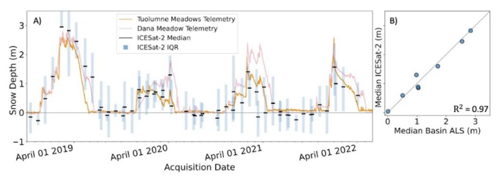
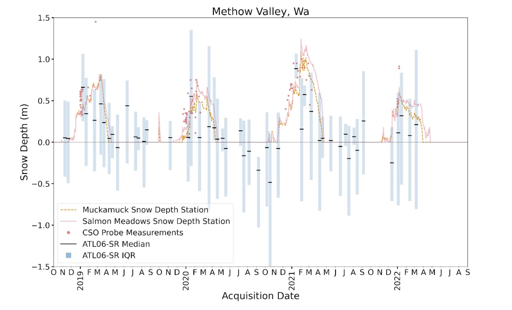

ICESat-2: It’s not just for ice!
Snow depth varies greatly over very small spatial scales, yet most current snow depth data in the western U.S. come from sparse point measurements that often do not fully represent the snow depth of the surrounding basin. As such, the water resources community needs more observations of snow depth in order to improve and enhance distributed estimates of snow cover. The NASA ICESat-2 mission provides such an opportunity. ICESat-2 supplies over four years of global lidar measurements since October 2018. Although ICESat-2 was not designed to measure snow in non-polar regions, previous studies have shown that standard ICESat-2 data, as processed and produced by NASA, can provide snow depth measurements. These measurements rely on pre-existing snow-off lidar and are only accurate in fairly flat areas without much tree cover. However, most of the snow-covered areas of the western U.S. are in mountainous (steep) terrain, often with dense tree cover. With this in mind, we developed SlideRule Earth.
SlideRule Earth to the rescue
To help expand the usefulness of ICESat-2 data beyond the original goals of the mission, a group of researchers and software engineers developed the SlideRule Earth project. SlideRule Earth provides on-demand customized processing of ICESat-2 data, in ways that can optimize the data for different conditions. We tested the accuracy of ICESat-2 snow depth measurements from data processed using SlideRule Earth, which was theoretically optimized for mountainous terrain.
We calculated ICESat-2 SlideRule snow depths at two study sites in the western U.S.: the upper Tuolumne River above Hetch Hetchy, and the Methow Valley in Washington’s eastern Cascade Mountains. To calculate snow depth, we subtracted ICESat-2 surface elevation measurements from snow-off digital terrain models (DTMs). We compared these calculated snow depth measurements to in-situ snow depth sensors and aerial snow-on lidar data (at the Tuolumne River site only).
To calculate snow depth, we subtracted ICESat-2 surface elevation measurements from snow-off digital terrain models (DTMs):
We found that the customized processing of ICESat-2 data improved the accuracy of snow depth measurements compared to previous studies that used standard data processing. However, factors such as surface slope and tree cover still impacted measurement accuracy. At the Tuolumne River study site, which had shallower slopes and less canopy cover, ICESat-2 measurements had a median difference of 4 cm and a root mean squared error of 24 cm as compared to snow-on lidar measurements. At the Methow Valley study site, which had steeper slopes and more canopy cover, ICESat-2 measurements had a median difference of between -20 and -30 cm and a root mean squared error of between 33 and 41 cm as compared to nearby point measurements from SNOTEL stations. Even with the improved data processing techniques, there were still larger errors at the Methow Valley site than the Tuolumne River site, likely due to steeper slope angles, denser tree cover, greater cloud cover, and a lower quality DTM. However, some of the larger errors in the Methow Valley could also be due to the lower quality of the in-situ data that we used as “truth”.
In Conclusion:
SlideRule Earth custom processing of ICESat-2 satellite lidar measurements improves snow depth measurement accuracy in non-polar mountainous regions. Careful transformation and alignment of ICESat-2 data and snow-off DTMs is necessary prior to calculating snow depths, and only high-quality DTMs should be used.
 Considerations for future use of ICESat-2:
- Snow depth calculations using ICESat-2 are limited to areas with existing high-quality DTMs.
- Future work should focus on improving approaches to directly calculate snow depth from ICESat-2, for example by collecting repeat snow-on and snow-off data using ICESat-2 to avoid reliance on external datasets.
- Ideal site characteristics for ICESat-2 studies include moderate surface roughness and canopy cover, with relatively deep snow depth ( > 0.5 m).
- ICESat-2 measurement density increases with latitude, so lower latitude study sites need to be large enough to provide a sufficient sample size but small enough so that basin-median snow depth statistics remain representative.
- Rapid delivery of ICESat-2 data (~1 week delay instead of 3-month delay) is currently in development, which is critical to using ICESat-2 for current-season snow depth measurements and for making this data useful to water managers.
- ICESat-2 could continue collecting data through the mid-2030s, and could become a functional operational forecasting tool for water managers globally wherever snow-off lidar exists.